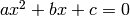
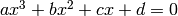
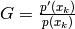
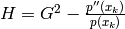

New in version 0.4.
Here are some root-finding algorithm, such as ruffini()‘s method, quadratic() formula, cubic() formula, newton()‘s method, halley()‘s method, householder()‘s method, schroeder()‘s method, brent()‘s method, and bisection().
Returns the real integer roots (if there are any) of the polynomial basing on the right-hand side. If the polynomial has not the right-hand side, returns an empty list.
Examples
>>> p = poly1d([1, 5, 5, -5, -6])
>>> p
+ x^4 + 5x^3 + 5x^2 - 5x - 6
>>> ruffini(p)
[-1, 1]
>>> p(-1), p(1)
(0, 0)
and we can go on:
>>> p2, p3 = p / (x - 1), p / (x + 1)
>>> p2, p3
(+ x^3 + 6x^2 + 11x + 6, + x^3 + 4x^2 + x - 6)
>>> ruffini(p2), ruffini(p3)
([-1, -2, -3], [1])
>>> p2(-1), p2(-2), p2(-3)
(0, 0, 0)
>>> p3(1)
0
>>> p4, p5, p6 = p2 / (x - 1), p2 / (x - 2), p / (x - 3)
>>> p4, p5, p6
(+ x^2 + 7x + 18, + x^2 + 8x + 27, + x^3 + 8x^2 + 29x + 82)
>>> ruffini(p4), ruffini(p5), ruffini(p6)
([], [], [])
there are no more real roots, but if we try quadratic():
>>> quadratic(p4), quadratic(p5)
(((-3.5+2.3979157616563596j), (-3.5-2.3979157616563596j)), ((-4+3.3166247903553998j), (-4-3.3166247903553998j)))
New in version 0.3.
Finds the two roots of the polynomial poly solving the quadratic equation: 
| Raises : | AssertionError if the polynomial’s degree is not 2. |
|---|---|
| Return type: | 2 numbers (integer, float or complex) in a tuple |
Examples
>>> p = poly1d([1, 0, -4])
>>> p
+ x^2 - 4
>>> quadratic(p)
(2.0, -2.0)
>>> p(2)
0
>>> p(-2)
0
>>> p = poly1d([2, 3, 1])
>>> p
+ 2x^2 + 3x + 1
>>> quadratic(p)
(-0.5, -1.0)
>>> p(-0.5)
0.0
>>> p(-1.0)
0.0
this functions can return complex numbers too:
>>> p = poly1d([-4, 5, -3])
>>> p
- 4x^2 + 5x - 3
>>> quadratic(p)
((0.625-0.59947894041408989j), (0.625+0.59947894041408989j))
but the precision is lower:
>>> p = poly1d([-4, 5, -3])
>>> p
- 4x^2 + 5x - 3
>>> quadratic(p)
((0.625-0.59947894041408989j), (0.625+0.59947894041408989j))
>>> r1 = (0.625-0.59947894041408989j)
>>> p(r1)
(-4.4408920985006262e-16+0j)
>>> r2 = (0.625+0.59947894041408989j)
>>> p(r2)
(-4.4408920985006262e-16+0j)
New in version 0.3.
Finds the three roots of the polynomial poly solving the equation: .
| Raises : | AssertionError if the polynomial’s degree is not 3. |
|---|---|
| Return type: | 3 numbers (integer, float or complex) in a tuple |
Examples
>>> k = poly1d([3, -2, 45, -1])
>>> k
+ 3x^3 - 2x^2 + 45x - 1
>>> cubic(k)
(0.022243478406449024, (0.3222115941301088+3.8576995055778323j), (0.3222115941301088-3.8576995055778323j))
>>> k = poly1d([-9, 12, -2, -34])
>>> k
- 9x^3 + 12x^2 - 2x - 34
>>> cubic(k)
(-1.182116114781928, (1.2577247240576306+1.2703952413531459j), (1.2577247240576306-1.2703952413531459j))
>>> k = poly1d([1, 1, 1, 1])
>>> cubic(k)
(-1.0, (5.551115123125783e-17+0.9999999999999999j), (5.551115123125783e-17-0.9999999999999999j))
>>> k(-1.)
0.0
>>> k = poly1d([-1, 1, 0, 1])
>>> cubic(k)
(1.4655712318767669, (-0.23278561593838348+0.7925519925154489j), (-0.23278561593838348-0.7925519925154489j))
>>> k(cubic(k)[0])
3.9968028886505635e-15
References
Finds all four roots of a fourth-degree polynomial poly:
:raises: :exc:`AssertionError` if the polynomial's degree is not 4
:rtype: 4 numbers (integer, float or complex) in a tuple
Examples
When all the roots are real:
>>> from pypol.roots import *
>>> from pypol.funcs import from_roots
>>> p = from_roots([1, -4, 2, 3])
>>> p
+ x^4 - 2x^3 - 13x^2 + 38x - 24
>>> quartic(p)
[1, 3.0, -4.0, 2.0]
>>> map(p, quartic(p))
[0, 0.0, 0.0, 0.0]
>>> p = from_roots([-1, 42, 2, -19239])
>>> p
+ x^4 + 19196x^3 - 827237x^2 + 769644x + 1616076
>>> quartic(p)
[-1, 42.0, -19239.0, 2.0]
>>> map(p, quartic(p))
[0, 0.0, 3.0, 0.0]
Otherwise, if there are complex roots it loses precision and this is due to floating point numbers:
>>> from pypol import *
>>> from pypol.roots import *
>>>
>>> p = poly1d([1, -3, 4, 2, 1])
>>> p
+ x^4 - 3x^3 + 4x^2 + 2x + 1
>>> quartic(p)
((1.7399843312651568+1.5686034407060976j), (1.7399843312651568-1.5686034407060976j), (-0.23998433126515695+0.35301727734776445j), (-0.23998433126515695-0.35301727734776445j))
>>> map(p, quartic(p))
[(8.8817841970012523e-16+8.4376949871511897e-15j), (8.8817841970012523e-16-8.4376949871511897e-15j), (8.3266726846886741e-15-2.7755575615628914e-15j), (8.3266726846886741e-15+2.7755575615628914e-15j)]
>>> p = poly1d([4, -3, 4, 2, 1])
>>> p
+ 4x^4 - 3x^3 + 4x^2 + 2x + 1
>>> quartic(p)
((0.62277368382725595+1.0277469284099872j), (0.62277368382725595-1.0277469284099872j), (-0.24777368382725601+0.33425306402324328j), (-0.24777368382725601-0.33425306402324328j))
>>> map(p, quartic(p))
[(-2.5313084961453569e-14+3.730349362740526e-14j), (-2.5313084961453569e-14-3.730349362740526e-14j), (1.354472090042691e-14-1.2101430968414206e-14j), (1.354472090042691e-14+1.2101430968414206e-14j)]
References
| Parameters: |
|
|---|---|
| Return type: | integer of float |
Examples
>>> k = poly1d([2, 5, 3])
>>> k
+ 2x^2 + 5x + 3
the roots of this polynomial are -1 and -1.5. We start with 10:
>>> newton(k, 10)
-1.0000000000000002
so we try -1:
>>> newton(k, -1)
-1
>>> k(-1)
0
We have one root! We continue:
>>> newton(k, -2)
-1.5
>>> k(-1.5)
0.0
This function can find complex roots too (if start is a complex number):
>>> k = poly1d([1, -3, 6])
>>> k
+ x^2 - 3x + 6
>>> roots.quadratic(k)
((1.5+1.9364916731037085j), (1.5-1.9364916731037085j))
>>> roots.newton(k, complex(100, 1))
(1.5+1.9364916731037085j)
>>> roots.newton(k, complex(100, -1))
(1.5-1.9364916731037085j)
References
New in version 0.3.
| Parameters: |
|
|---|---|
| Return type: | integer or float |
Examples
We want to find the roots of the polynomial: x^3 - 4x^2 - x - 4:
>>> p = (x + 1) * (x - 1) * (x + 4) ## its roots are: -1, 1, -4
>>> p
+ x^3 + 4x^2 - x - 4
starting from an high number:
>>> halley(p, 90)
1.0
>>> p(1.)
0.0
then we get lower:
>>> halley(p, -1)
-1.0
>>> p(-1.)
0.0
and lower:
>>> halley(p, -90)
-4.0
>>> p(-4.)
0.0
so we can say that the roots are: 1, -1, and -4.
References
New in version 0.4.
| Parameters: |
|
|---|---|
| Return type: | integer or float |
Examples
Let’s find the roots of the polynomial x^4 + x^3 - 5x^2 + 3x:
>>> p = (x + 3) * (x - 1) ** 2 * x
>>> p
+ x^4 + x^3 - 5x^2 + 3x
>>> householder(p, 100)
1.0000000139750058
>>> householder(p, 2)
1.0000000140746257
>>> r = householder(p, 2)
>>> p(r)
0.0
>>> householder(p, -100)
-3.0
>>> r = householder(p, -100)
>>> p(r)
0.0
if the precision is lower, the result will be worse:
>>> householder(p, 100, 0.1)
1.0623451865071678
>>> householder(p, 100, 0.00001)
1.0000036436860307
>>> householder(p, 100, 0.00000001)
1.0000000049370159
>>> householder(p, -100, 0.1)
-3.0000022501789867
>>> householder(p, -100, 0.001)
-3.0
References
New in version 0.4.
| Parameters: |
|
|---|---|
| Return type: | integer or float |
Examples
>>> k = poly1d([3, -4, -1, 4])
>>> k
+ 3x^3 - 4x^2 - x + 4
>>> schroeder(k, 100)
-0.859475828371609
>>> k(schroeder(k, 100))
0.0
>>> schroeder(k, 100j)
(1.0964045808524712-0.5909569632973221j)
>>> k(schroeder(k, 100))
-1.1102230246251565e-16j
>>> schroeder(k, -100j)
(1.0964045808524712+0.5909569632973221j)
>>> k(schroeder(k, 100))
1.1102230246251565e-16j
where:


| Parameters: |
|
|---|---|
| Return type: | complex |
Examples
>>> k = poly1d([32, -123, 43, 2])
>>> k
+ 32x^3 - 123x^2 + 43x + 2
>>> laguerre(k, 100)
(3.448875873899064+0j)
>>> k(laguerre(k, 100))
(2.5579538487363607e-13+0j)
>>> laguerre(k, 1)
(0.43639990661090833+0j)
>>> k(laguerre(k, 1))
0j
>>> laguerre(k, -100)
(-0.041525780509971674+0j)
>>> k(laguerre(k, -100))
0j
The Durand-Kerner method. It finds all the roots of the polynomials poly simultaneously. With some polynomials it works quite well:
>>> from pypol.funcs import from_roots
>>> p = from_roots([1, -3, 14, 5, -100])
>>> p
+ x^5 + 83x^4 - 1671x^3 + 3097x^2 + 19490x - 21000
>>> durand_kerner(p)
((1+0j), (5+0j), (-100+0j), (-3+0j), (13.999999999999998+0j))
>>> map(p, durand_kerner(p))
[0j, 0j, 0j, 0j, (-7.5669959187507629e-10+0j)]
>>> p = from_roots([1, -3, 14, 5, -10, 4242])
>>> p
+ x^6 - 4249x^5 + 29553x^4 + 598609x^3 - 2064094x^2 - 7468020x + 8908200
>>> durand_kerner(p)
((1+0j), (-3+0j), (-10+0j), (5+0j), (4242-1.2727475858741762e-49j), (14+0j))
>>> map(p, durand_kerner(p))
[0j, 0j, 0j, 0j, (60112-1.7453195261352414e-31j), 0j]
>>> p = poly1d([1, 2, -3, 1, -4])
>>> durand_kerner(p)
((1.3407787867177585-9.656744866722633e-34j), (-0.084897978584602823-0.96623889223617843j), (-3.1709828295485529+8.2085042293591779e-34j), (-0.084897978584602823+0.96623889223617843j))
>>> map(p, durand_kerner(p))
[(-8.8817841970012523e-16-1.2923293554560813e-32j), (-4.4408920985006262e-16-2.2204460492503131e-16j), (3.5527136788005009e-15-3.8729295219100667e-32j), (-4.4408920985006262e-16+2.2204460492503131e-16j)]
>>> durand_kerner(p)
((1+0j), (-2424+6.2230152778611417e-61j), (14+1.2446030555722283e-60j), (381.99999999999994+4.6672614583958563e-61j), (133-7.0008921875937844e-61j), (5-2.4892061111444567e-60j), (-100+3.3735033418337674e-80j), (-3+4.9784122222889134e-60j))
>>> map(p, durand_kerner(p))
[0j, (116436291584-3.6076395061767809e-37j), 3.0129989385594897e-47j, (-110296.125+3.1986819282098692e-42j), (212+2.8399399457319209e-44j), 8.8231056584250621e-48j, 1.032541429306196e-63j, -3.3300895740082056e-47j]
But with other polynomials it could raise an OverflowError:
>>> p = poly1d([-1, 2, -3, 1, 4])
>>> p
- x^4 + 2x^3 - 3x^2 + x + 4
>>> durand_kerner(p)
Traceback (most recent call last):
File "<pyshell#20>", line 1, in <module>
durand_kerner(p)
File "roots.py", line 641, in durand_kerner
>>> map(p, durand_kerner(p))
File "core.py", line 1429, in __call__
return eval(self.eval_form, letters)
File "<string>", line 1, in <module>
OverflowError: complex exponentiation
In this cases you can use other root-finding algorithms, like laguerre() or halley():
>>> laguerre(p, 10)
(5.0000000000018261+0j)
>>> laguerre(p, 5)
(5+0j)
>>> p((5+0j))
0j
>>> halley(p, 10)
5.0
>>> halley(p, 100)
14.0
>>> halley(p, 1000)
382.0
>>> halley(p, -1000)
-100.0
>>> halley(p, -100)
-100.0
>>> halley(p, -10)
-3.0
Finds a root of the polynomial poly, with the Brent’s method.
| Parameters: |
|
|---|---|
| Return type: | integer or float |
Examples
>>> p = poly1d([1, -4, 3, -4])
>>> p
+ x^3 - 4x^2 + 3x - 4
>>> brent(p, 100, -100)
3.4675038570565078
>>> r = brent(p, 100, -100)
>>> p(r)
-1.1723955140041653e-13
If we start closer:
>>> r = brent(p, 10, -10)
>>> p(r)
-1.7763568394002505e-15
the precision is greater.
References
Pseudocode from Wikipedia
Warning
Doesn’t seem to work in some cases.
Finds the root of the polynomial poly using the bisection method. When it finds the root, it checks if -root is one root too. If so, it returns a two-length tuple, else a tuple with one root.
| Parameters: | k (float) – the increment of the two extreme point. The increment is calculated with the formula a + ak. |
|---|
So, if a is 50, after the increment 50 + 50*0.5 a will be 75. epsilon sets the precision of the calculation. Smaller it is, greater is the precision.
| Raises : | ValueError if epsilon is bigger than 5 or k is negative |
|---|---|
| Return type: | integer or float or NotImplemented when:
|
References
Warning
In some case this function may not work!
New in version 0.2.
Changed in version 0.3.